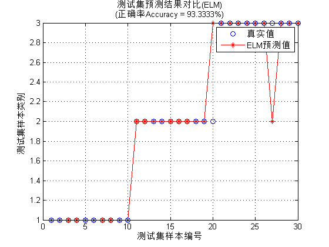

Contents
I. 清空环境变量
clear all
clc
II. 训练集/测试集产生
1. 导入数据
load iris_data.mat
2. 随机产生训练集和测试集
P_train = []; T_train = []; P_test = []; T_test = []; for i = 1:3 temp_input = features((i-1)*50+1:i*50,:); temp_output = classes((i-1)*50+1:i*50,:); n = randperm(50); % 训练集——120个样本 P_train = [P_train temp_input(n(1:40),:)']; T_train = [T_train temp_output(n(1:40),:)']; % 测试集——30个样本 P_test = [P_test temp_input(n(41:50),:)']; T_test = [T_test temp_output(n(41:50),:)']; end
III. ELM创建/训练
[IW,B,LW,TF,TYPE] = elmtrain(P_train,T_train,20,'sig',1);
IV. ELM仿真测试
T_sim_1 = elmpredict(P_train,IW,B,LW,TF,TYPE); T_sim_2 = elmpredict(P_test,IW,B,LW,TF,TYPE);
V. 结果对比
result_1 = [T_train' T_sim_1']; result_2 = [T_test' T_sim_2'];
1. 训练集正确率
k1 = length(find(T_train == T_sim_1)); n1 = length(T_train); Accuracy_1 = k1 / n1 * 100; disp(['训练集正确率Accuracy = ' num2str(Accuracy_1) '%(' num2str(k1) '/' num2str(n1) ')'])
训练集正确率Accuracy = 100%(120/120)
2. 测试集正确率
k2 = length(find(T_test == T_sim_2)); n2 = length(T_test); Accuracy_2 = k2 / n2 * 100; disp(['测试集正确率Accuracy = ' num2str(Accuracy_2) '%(' num2str(k2) '/' num2str(n2) ')'])
测试集正确率Accuracy = 93.3333%(28/30)
VI. 绘图
figure(2) plot(1:30,T_test,'bo',1:30,T_sim_2,'r-*') grid on xlabel('测试集样本编号') ylabel('测试集样本类别') string = {'测试集预测结果对比(ELM)';['(正确率Accuracy = ' num2str(Accuracy_2) '%)' ]}; title(string) legend('真实值','ELM预测值')